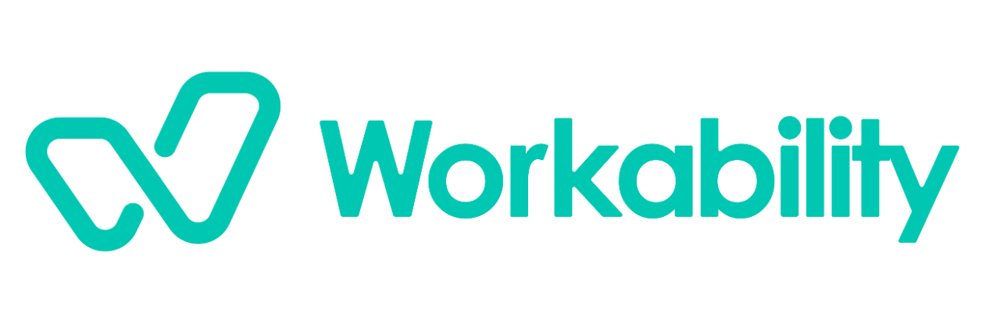

Færre sykedager gjennom bedre dialog på arbeidsplassen
Workability var en digital tjeneste for å redusere sykefravær gjennom bedre kommunikasjon og tilrettelegging ved sykdom og skade.
Design og interaksjonsdesign, fra idé til ferdig tjeneste
Jeg jobbet for Workability i et aar og utviklet designet og interaksjonsdesignet for tjenesten, og var involvert i alle ledd av produktutviklingen. Arbeidet dekket både plattformen ansatte, ledere og HR bruker i oppfølgingen, og nettsiden som presenterer tjenesten.
- Brukerreiser og flyt
- Interaksjonsdesign
- Visuelt design og komponenter
- Oppfølging i utvikling
Plattform
Startsiden gir brukeren oversikt over meldinger og oppgaver, en ukentlig sjekk av hvordan det går, og snarveier til egenmelding, å melde fra om forhold på jobben og midlertidige endringer.
Landingsside
En assistent møter brukeren med fire innganger: starte dialog med leder eller HR, kontakte bedriftshelsetjenesten, melde fravær eller ta opp andre forhold som påvirker arbeidet.
Personlig side
Hver oppfølgingssak har sin egen side med status og frister, dialog mellom de involverte, tilgangsstyring, skjemaer og en tidslinje over hele oppfølgingsløpet.
Skjema for tilrettelegging
Skjemaet er delt i korte steg med store, visuelle valg. Det gjør det enkelt for den ansatte å beskrive hva som kan hjelpe, uten lange tekstfelt.
Nettside
Nettsiden presenterer tjenesten for ledere og HR, med en tydelig vei videre til demo og gratis prøveperiode.